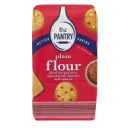
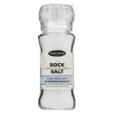
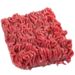
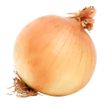
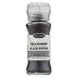
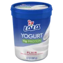
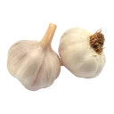
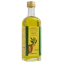

Ana sayfa, tarifler, keşfet, hesap, tarif detay ve pişirme modu tek uygulamada bağlı.
Sekmeler, itilen ekranlar, alttan açılan modaller ve geri navigasyonu çalışıyor.
Tek ekran linki için adresin sonuna #/tarif-detay gibi bir rota ekleyebilirsin.
Derin link · #/ekranGilroy · FA 6.5.2Çevrimdışı çalışır
09:41
DadaGastro
Günaydın, Elif — bugün mutfakta ne var?
Herkesin bir tabağı var
Bugün ne pişirsem?
Evdeki malzemeyi yaz, sana ne pişirebileceğini söyleyelim.
Karar veremedin mi?20 yemek modundan hazır menülere göz at.
Sonuç
Şefin Tercihi 30 dk
Ezogelin Çorbası
6 kişilik₺₺₺
ATAyşe Tülin
4,9 (96)Kolay
Editör Seçkisi 75 dk
Fırında Tereyağlı Mantı
4 kişilik₺₺₺
ATAyşe Tülin
4,9 (204)Orta
Sonuç yok
Bu seçimlere uygun tarif bulamadık
Süreyi uzat ya da damak tercihlerinden birini kaldır — eşleşme ihtimali artar.
Bir yemek modu seç; hazır menüye göz at ya da sıfırdan kendi menünü kur.
Bu moda uygun tariflerden beğendiklerini menüne ekle — kendi sofranı sen kur.
Sebze 45 dk
Kumara Kızartması | Yeni Zelanda Usulü
4 kişilik₺₺₺
EAEmel Akgül
4,6 (31)Kolay
Atıştırmalık 60 dk
Acarajé | Brezilya Usulü Börülce Köftesi
10 kişilik₺₺₺
RÖRüya Öymen
4,4 (18)Zor
Hamur İşi 75 dk
Nazuk | Ermeni Usulü Katmerli Tatlı Ekmek
10 dilim₺₺₺
ZUZeynep Usta
4,8 (24)Zor
Yumurta Tarifleri 35 dk
Sataras | Balkan Usulü Biberli Yumurta
4 kişilik₺₺₺
EAEmel Ayaydın
4,5 (11)Kolay
Kısa Süreli Ev Yemeği Seçkisi
Sebze
Az malzemeyle, uzun uğraşsız; her gün tekrar edilebilecek pratik ev yemekleri.
6 tarif ~210 dk
Ocak Başında On Beş Dakika
Çorba
Ocağı uzun süre meşgul etmeden, gündelik telaşa uyan hafif sofra.
7 tarif ~340 dk
Akşam Telaşına Yetişen Sofra
Bakliyat
İşten eve dönüşte yarım saatte masaya gelen, yorulmadan hazırlanan günlük sofra.
4 tarif ~280 dk
Ev Sofrasının Değişmezi
Sandviç, Burger ve Dürüm
Her gün tekrarlanabilecek, sade ama doyurucu günlük ev yemeği.
5 tarif ~221 dk
Dolapta Ne Var?
Dolapta ne var?
Dolabındaki malzemeyle pişir
Daha az israf: elindekini değerlendir, bozulmadan sofraya gelsin.
Elinde 0 malzeme
Henüz seçim yok — Dolaptakiler'den malzeme işaretle ya da Hariç Tuttuklarım'ı doldur.
Dolabında bulunan malzemeleri seç, sana uygun tarifleri gösterelim.
Damak tadın nedeniyle görmek istemediğin malzemeleri seç — tarif kolayca çıkarılabiliyorsa yine gösterilir, seni bilgilendiririz.
Yaşam biçimin ya da beslenme tercihin nedeniyle tüketmediğin ürünleri seç — uyumsuz tarifler sonuçlarda gösterilmez.
Hızlı seçim — tek dokunuşla ilgili ürün grubunu işaretler
Sağlık açısından kesinlikle tüketmemen gereken malzemeleri seç — alerjen içeren tarifler sonuçlardan tamamen çıkarılır, önerilmez.
Alerji olmasa da tüketmekte zorlandığın içerikler — her seçim için tarifi hiç gösterme ya da uyararak göster diyebilirsin.
Laktoz
Gluten hassasiyeti
Acı
Sülfit
Kafein
Yüksek şeker
Histamin
Fruktoz (FODMAP)
Patlıcangiller (domates·patates·biber)
Maya
Yumurta hassasiyeti
Diğer
Seçtiklerin Dolaptakiler listesine eklenir · 185 malzeme
Sonuç yok
Bu adda malzeme yok
Yazımı kontrol et ya da kategorilerden göz at.
Besin değeri & vakit
Sonucu daralt
Porsiyon kalorisi — 120–650 kcal
01200+ kcal
Porsiyon proteini
Hazırlık süresi
Zorluk
Dolabın boş
Dolabın boş görünüyor
Dolaptakiler'den birkaç malzeme işaretle — sana onlarla pişirebileceğin denenmiş tarifleri getirelim.
Sonuç
0 tarif bulundu
elindeki 0 malzemeyle · Tam eşleşme yok — elindekilere en yakın tarifler gösteriliyor.
Fırında Tereyağlı Mantı
04:32
Editör Onaylı
Fırında Tereyağlı Mantı — Klasik Tarif
4.9 (1.204) 412B görüntülenme 2.180 kişi yaptı
ATAyşe TülinYöresel Lezzetler · 142 tarif
Porsiyon4 kişilik
Hazırlık30 dk
Pişirme45 dk
ZorlukOrta
Derece180°C fırın
Porsiyon başı512 kcal
Önce fırında hafifçe kızaran, sonra et suyunda yumuşacık pişen Kayseri usulü mantı. Sarımsaklı yoğurdu ve kızgın tereyağlı sosuyla, bayram sofralarının baş tacı.
Türk MutfağıHamur İşiFırındaKalabalık SofraBaharatlı
Kaç kişilik?Malzeme miktarları otomatik güncellenir
4
Hamur için

3 su bardağı Unelenmiş
1 adet Yumurtaoda sıcaklığında
1 su bardağı Suılık

1 çay kaşığı Tuz
İç harç için

250 g Kıymaorta yağlı dana

1 adet Soğanrendelenmiş

1 çay kaşığı Karabiber
Sos & servis için

3 su bardağı Süzme yoğurtoda sıcaklığında

2 diş Sarımsakezilmiş

60 g Tereyağı
1 yemek kaşığı Kuru nane
11 malzeme · 0 tanesi işaretlendi
Pişirme Moduna GirTam ekran adımlar, zamanlayıcı, ekran açık kalır
1
Hamuru yoğur ve dinlendir
15 dk + 10 dk dinlenme
Unu geniş bir kaba ele, ortasını havuz gibi aç. Yumurta, tuz ve suyu ekleyip kulak memesi yumuşaklığında bir hamur yoğur. Üzerini nemli bezle örtüp 10 dakika dinlendir — dinlenen hamur açılırken yırtılmaz.
Yaptım
2
İç harcı hazırla
5 dk
Kıymayı rendelenmiş soğan, tuz ve karabiberle karıştır. Harcı çok yoğurma; gevşek harç pişerken daha sulu ve lokum gibi kalır.
Yaptım
3
Hamuru aç, kareler kes
20 dk
Hamuru ikiye böl, unlanmış tezgâhta her parçayı 2 mm incelikte aç. Keskin bıçak ya da rulet ile 3×3 cm kareler kes. Kareler kurumasın diye üzerini bezle ört.
Yaptım
4
Mantıları doldur ve kapat
20 dk
Her karenin ortasına nohut büyüklüğünde harç koy. Dört ucu birleştirip bohça gibi sıkıca kapat. Kapanan mantıları yağlanmış fırın tepsisine aralıklı diz.
Yaptım
5
Fırınla, sonra et suyunda pişir
25 dk · 180°C
Tepsiyi önceden ısıtılmış 180°C fırında 15 dakika, mantılar hafif pembeleşene kadar kızart. Üzerine sıcak et suyunu döküp 10 dakika daha pişir — suyu çeken mantı dışı diri, içi yumuşacık olur.
Yaptım
6
Yoğurt ve sosla servis et
5 dk
Süzme yoğurdu ezilmiş sarımsakla çırp, mantının üzerine gezdir. Tereyağını toz biberle kızdırıp cazırdarken dök; üzerine kuru nane serp. Eline sağlık!
Yaptım
ZKZehra Kaya3 gün önce · Bu tarifi yaptı 5.0
Hamuru 2 mm açma tüyosu gerçekten fark yaratıyor. Fırında 15 dakika sonra et suyu ekleme kısmı ilk defa denedim, mantı dağılmadı. Ailece bayıldık.
Gönderdikten sonra tarif editör kuyruğuna düşer. Yayına alınınca bildirim gelir — genelde 1 iş günü.
Pilav neden tane tane olmaz?
Neden Olur?
Pilav neden tane tane olmaz?
24.180 okunma 3 dk okuma 12 Mart 2026
ZUZeynep UstaHamur İşi & Pilav · 126 tarif
Pilavın lapa olmasının tek bir sebebi yok — üç ayrı aşamada iş ters gidebilir. Sırayla bakalım.
1. Nişasta yıkanmadı
Pirincin yüzeyindeki serbest nişasta suya karışınca taneler birbirine yapışır. Pirinci durulama suyu berraklaşana kadar yıka; baldo için bu genelde 4–5 sudur.
2. Su oranı yanlış
Kabaca 1 ölçü pirince 1,5 ölçü su gider. Pirinci önceden ılık tuzlu suda beklettiysen bu oran 1,25'e iner — tane suyu zaten içmiştir.
3. Demlenmedi
Ocak kapandıktan sonra tencerenin kapağı ile arasına temiz bir bez koyup 15 dakika demlendir. Bez yoğuşan buharı emer, pilavın üstü ıslanmaz.
Kavurma — pirinci yağda 2–3 dakika çevir, tane yağ tabakasıyla kaplansın.
Karıştırma — pişerken kaşık sokma; her karıştırma nişastayı serbest bırakır.
Tencere — kalın tabanlı tencere ısıyı eşit dağıtır, dip tutmaz.
Ustanın notu
Pilav yine de lapa olduysa kurtarmanın yolu var: tencereyi ocaktan al, kapağı aç, üzerine kuru bir bez ört ve 10 dakika bekle. Fazla nem beze geçer, taneler bir miktar açılır.
Patlıcangillerden, botanik olarak meyve sayılan ama mutfakta sebze gibi kullanılan bir bitkidir. Türkiye mutfağında sos, salata, dolma ve kavurmanın omurgasını kurar.
Ne işe yarar?
Yemeğe asit, tatlılık ve umami aynı anda verir. Pişirdikçe suyunu bırakır, şekeri yoğunlaşır; bu yüzden salça ve konsantre soslarda tat taşıyıcı olarak kullanılır.
Salatalık domates — diri, az sulu; kesince dağılmaz.
Sos domatesi — etli, az çekirdekli; uzun pişirmeye dayanır.
Likopen, C vitamini ve potasyum bakımından zengindir. Likopen ısıyla ve yağla birlikte daha iyi emilir — zeytinyağında kavrulmuş domates, çiğ domatesten daha çok likopen verir.
Nasıl seçilir ve saklanır?
Sapı yeşil ve diri olanı seç; ele ağır gelmeli. Buzdolabında saklama — soğuk aromayı öldürür, unlu bir doku bırakır. Tezgâhta, sap tarafı aşağıda ve tek sıra halinde dursun.
Mutfak notu
Kabuğunu kolay soymak için tepesine çarpı çiz, 30 saniye kaynar suya at, buzlu suya al. Kabuk kendiliğinden ayrılır.
125 gramDeğerler ortalamadır; malzemenin nemine ve sıkışıklığına göre ±%10 oynayabilir.
Sık kullanılanlar
Nasıl ölçülür
Ölçüler silme (bastırmadan, tepeleme olmadan) doldurulmuş kabul edilir. Unu kaşıkla kaba doldur, bıçak sırtıyla sıyır — kabı una daldırma, %20 fazla alır.
Unlar ve Tozlar — 11 malzeme
Malzeme
Su brd.
Yemek k.
Tatlı k.
Çay k.
Neden gram?
Aynı bardak una göre 125, bala göre 280 gram gelir. Hamur işinde hacim değil ağırlık tutarlı sonuç verir — bir mutfak terazisi tarifin yarısını kurtarır.
Ölçü kapları
Su Bardağıİnce belli çay bardağının 2 katı; tariflerin temel ölçüsü.200 ml
Çay Bardağıİnce belli klasik bardak; su bardağının yarısı.100 ml
Kahve FincanıTürk kahvesi fincanı esastır; sos ve şurupta sık.60 ml
Yemek Kaşığı3 tatlı kaşığına eşittir; silme ölçülür.15 ml
Tatlı Kaşığı1 çay kaşığının biraz üstü; orta boy kaşık.5 ml
Çay KaşığıEn küçük standart kaşık; baharat ve maya için.4 ml
Paket ve kalıp ölçüleri
Paket MargarinKalıp margarin/tereyağı standardı250 g
Paket Instant Kuru MayaToz maya; ~3,5 çay kaşığı10 g
Paket Yaş MayaTaze maya; kuru mayadan ayrıdır42 g
Paket Kabartma Tozu~1 tepeleme tatlı kaşığı10 g
Paket VanilinVanilya tozu poşeti5 g
Sapma payı
Ölçüler silme doldurulmuş kabul edilir. Gerçek hacim kabın iç çapına göre ±%5 oynayabilir.
Sıcaklık kademeleri
Kademe
Statik
Fanlı
Gaz
Çok düşük Beze, kurutma
110–130°
90–110°
¼–½
Düşük Yavaş et pişirme
140–150°
120–130°
1
Orta-düşük Cheesecake, sufle
160–170°
140–150°
3
Orta Kek, poğaça, kurabiye
180–190°
160–170°
4–5
Orta-yüksek Börek, ekmek, sebze
200–220°
180–200°
6–7
Yüksek Pide, pizza, mühür
230–250°
210–230°
8–9
Fırın ipuçları
10 dk önceden ısıtSoğuk fırın hamuru çökertir
Fanlıda 20° düşFan ısıyı daha sert iletir
Orta raf standarttırAlt raf tabanı, üst raf yüzeyi kızartır
İlk 25 dk kapağı açmaIsı kaybı keki çökertir
Termometre şart mı?
Ev fırınlarının gösterge sapması ±25 dereceye kadar çıkabiliyor. 40 liralık bir fırın termometresi, üç bozulmuş kekten ucuzdur.
Sofra Düzeni
Sofra nasıl kurulur?
Günlük sofralardan özel davetlere kadar doğru, şık ve işlevsel sofra kurulum rehberi.
11sofra tipi61pratik ipucuA–Zkurulum rehberi
Dört temel kural
Tabak hizasıMasa kenarından 2 parmak içeride, hepsi aynı hizada
Misafir sofrası günlük sofradan iki noktada ayrılır: takımın tamamı masada durur ve servis sırası önceden belli olur. Aşağıdaki sırayla kurarsan hiçbir şey unutulmaz.
1
Masa örtüsü ve runner
Örtü her kenardan 25–30 cm sarkmalı. Runner kullanacaksan örtü düz renk olsun; iki desen yan yana durmaz.
2
Servis tabağı
Masa kenarından iki parmak içeride, kişi başı 60 cm alan bırakarak diz. Tabak merkezleri arası eşit olsun.
3
Çatal, bıçak, kaşık
Dıştan içe doğru kullanım sırasına göre diz: en dışta ilk kullanılacak olan durur. Bıçağın ağzı tabağa döner.
Çatal solda, dıştan içe Bardak bıçağın ucunda Kişi başı 60 cm
4
Bardaklar
Su bardağı bıçağın ucunun üzerinde; şarap kadehi onun sağ altında, hafif çapraz. Üçten fazla bardak koyma.
5
Peçete
Kumaş peçete servis tabağının üstünde ya da çatalın solunda. Karmaşık katlama yapma; sade dikdörtgen en şık duranıdır.
Buraya kadar 12 dakika
Örtü, tabak, takım ve bardak bittiyse sofranın iskeleti hazır. Kalan üç adım sıcaklık ve atmosfer işi — misafir gelmeden 10 dakika önce yapılır.
6
Ortak kaplar ve ekmek
Ortak kaplar masanın orta hattında, herkesin uzanabileceği mesafede. Ekmek sepeti iki uçta ikişer adet.
178B izlenme 3 hafta önce 10 Dakikada Yemekler · Bölüm 4
Pirinci yıkamaktan demlemeye kadar altı adım. Su oranını ve demleme süresini doğru tutturursan pilav her seferinde tane tane çıkar — videoda üç yaygın hatayı da tek tek gösteriyoruz.
Takip ettiğin serinin yeni bölümü yayınlandığında haber verelim mi? Ayarlar ▸ Bildirimler'den açabilirsin.
10 Dakikada Yemekler
Seri
10 Dakikada Yemekler
8 bölüm toplam 62 dakika Her Salı yeni bölüm
Akşam eve geç kalınca ne pişireceğini düşünmek zorunda kalma. Bu seride tek tencerede, on dakikada biten sekiz yemek var — hepsi dolapta zaten bulunan malzemelerle.
4,8 · 214 değerlendirme Güzergâhın 48. km'si Tam yol üstü
07:00 – 20:00Her gün açık · şu an açık
Kahvaltı · YöreselGözleme, kuymak, tereyağlı bal
Aileye uygunBahçe oturma · çocuk alanı
Orta segmentKişi başı ₺₺
Neden bu durak?
Yol kenarında, sapma gerektirmeden girilen ender yerlerden. Gözlemeler tezgâhta açılıyor — hazır yufka kullanılmıyor. Sabah 09:00–11:00 arası yoğun; kalabalıktan kaçmak istiyorsan erken uğra.
Kıymalı gözleme — kıyma günlük çekiliyor, harç gevşek.
Kuymak — Karadeniz usulü, tereyağı ağırlıklı; iki kişiye yeter.
Park — 20 araçlık ücretsiz otopark, tır girişine uygun değil.
Topluluk notu
“Bayram dönüşü saat 14:00'te uğradık, 10 dakika bekledik ama gözleme sıcak geldi. Otoparkı yolun karşısında, dikkatli geçin.” — Kaan Demir, 2 hafta önce
Tarif detayındaki Alışveriş Listeme Ekle ile eklenen malzemeler burada birleşir.
Aynı malzeme iki tarifte geçiyorsa miktarlar toplanır, satır tekrar etmez.
Tariflerim
12Yayında
2İncelemede
3Taslak
İnceleme süresi
Gönderdiğin tarifler editör kuyruğunda. Genelde 1 iş günü içinde sonuçlanır, yayına girince bildirim gelir.
İnceleme neye bakıyor?
Ölçüler tutarlı mıgram / bardak
Adımlar tek iş anlatıyor mupişirme modu
Kapak görseli yeterli mi1200×900
İçerik özgün mütelif
Taslaklar kaybolmaz
Taslaklar yalnız sana görünür ve süresiz durur. Eksikleri tamamlayınca Tarifi Gönder ile kuyruğa alınır.
Bildirimler
Tümü 12Okunmamış 3TariflerimToplulukSistem
Bugün
ZKZehra Kaya tarifine yorum yaptı
“Hamuru 2 mm açma tüyosu gerçekten fark yaratıyor…”
2 saat önce
Tarifin 4,9 puana ulaştı
Beşamelli Fırın Makarna bu hafta 96 kişi tarafından denendi.
Kaldığın yerden devam et — defterin seni bekliyor.
ya da
Hangi hesaba giriyorsun?
Giriş yöntemi
E-posta veya kullanıcı adı *
Şifre *
Defterin, koleksiyonların ve alışveriş listen tüm cihazlarında aynı
Kaldığın video bölümü ve pişirme adımın hatırlanır
Rozet ve sezon puanın kaldığı yerden devam eder
Hesabın yok mu? Hemen Kayıt Ol
Üye Ol
Mutfağın sana göre şekillensin
Üyelik ücretsiz. Tarif arama, defter, koleksiyon ve topluluk — hepsi dahil.
Sınırsız tarif kaydet, koleksiyon oluştur
Kendi tariflerini yayınla, şef rozetleri kazan
Alışveriş listesi tariflerden otomatik dolsun
ya da e-posta ile
Ad Soyad *
Kullanıcı adı *
Profil bağlantın: dadagastro.com/sef/kullaniciadi
E-posta *
Şifre *
En az 8 karakter, bir rakam ve bir büyük harf içermeli.
Hesap tipi
Zaten üye misin? Giriş Yap
Şifremi Unuttum
Sıfırlama bağlantısı gönderelim
Hesabının e-posta adresini yaz; birkaç dakika içinde bağlantı gelir.
E-posta *
Kayıtlı e-postanı hatırlamıyorsan İletişim sayfasından bize yaz.
Sonra ne olacak?
1
E-postanı kontrol et
Bağlantı 30 dakika geçerli. Gelmediyse spam klasörüne bak.
2
Yeni şifreni belirle
En az 8 karakter, bir rakam ve bir büyük harf.
3
Tekrar giriş yap
Defterin, koleksiyonların ve listelerin yerinde duruyor.
Hâlâ giremiyor musun?
Sosyal hesapla kayıt olduysan şifren yoktur — Google ya da Facebook ile devam et.
Giriş ekranına dön
2.057 denenmiş tarif
Hepsi topluluk tarafından pişirilmiş, puanlanmış ve yorumlanmış. Denenmemiş tarif yayına girmez.
Dolapta ne varsa
Elindeki malzemeleri işaretle, ne pişirebileceğini söyleyelim. Sevmediklerini ve alerjilerini de öğreniriz.
Pişirme modu
Adım adım tam ekran, her adımın kendi zamanlayıcısıyla. Eller hamurluyken ekran sönmez.
Birkaç izin
Hepsi isteğe bağlı — sonradan Ayarlar'dan değiştirebilirsin.
BildirimlerYorum, rozet ve yeni bölüm haberleri
KonumDada Route yol üstü durakları için
Kamera ve galeriYorumlara ve tariflere fotoğraf eklemek için
Hakkımızda
2019'dan beri
Yaşasın Yemek Yemek!
266 kayıtlı üye 2.057 denenmiş tarif
Nasıl başladı
2019'da bir mutfak defterini dijitale taşımakla başladık. Amaç basitti: denenmemiş tarif yayınlamamak. Bugün 2.057 tarifin her biri en az bir kişi tarafından pişirilmiş, puanlanmış ve yorumlanmış durumda.
Ne yapıyoruz?
Tarif yayınlamıyoruz — tarif doğruluyoruz. Bir tarif yayına girmeden önce editör kuyruğundan geçer; ölçüler kontrol edilir, adımlar sadeleştirilir, süre ve porsiyon test edilir.
Tarifler — 33 kategori, 50 dünya mutfağı, gerçek ölçülerle.
Video Mutfağı — 33 video, 4 seri, adım adım teknik anlatımı.
Dada Route — yol üstü lezzet durakları, topluluk katkısıyla.
Pusulamız
Topluluk önce gelir: denenmiş tarif, dürüst yorum, doğrulanmış uzman.
Sponsorlu içerik her zaman “Sponsorlu” etiketiyle işaretlenir — gizli reklam yapmayız.
16 soru, 5 başlık altında. Bulamazsan alttaki İletişime Geç bağlantısı bize ulaştırır.
16soru5başlık1 günortalama dönüş
Üyelik & Hesap
Hayır — üyelik tamamen ücretsiz. Tarif arama, mutfak defteri, koleksiyonlar ve topluluk özelliklerinin tamamını ücretsiz kullanırsın.
Giriş ekranındaki “Şifremi unuttum” bağlantısını kullan; sıfırlama e-postası birkaç dakika içinde gelir. Bağlantı 30 dakika geçerlidir.
Hesap ▸ Profili Düzenle ekranından ad, biyografi ve avatar bilgilerini güncelleyebilirsin. Bildirim ve gizlilik tercihlerin de aynı ekrandan yönetilir.
Ayarlar ▸ Hesabımı sil üzerinden kalıcı silme talebi oluşturabilirsin. Talep sonrası 14 günlük geri dönüş süresi tanınır.
Tarif deneyimini işaretlediğinde bu profilinde birikir ve topluluk puanına katkı sağlar. Pişirme modunu bitirdiğinde otomatik işaretlenir.
Tarif detayındaki yorum alanından puan ve deneyimini paylaşabilirsin. Yorumlar yayınlanmadan önce moderasyon kuyruğundan geçer.
Tarif videoları, teknik anlatımlar ve video serilerinden oluşan içerik kütüphanemiz. 33 video, 4 seri hâlinde düzenli yayınlanır.
Üretici Üyeliği
İçerik üreten şeflerin kendi takipçilerine özel, ücretli bir plan sunmasını sağlayan üyelik türüdür.
Plan adı, aylık fiyat ve avantajlarını belirleyip başvuru gönderirsin; ilk yayın admin onayından geçer.
Doğrulama rozeti admin ekibi tarafından verilir; profilinin ve içeriklerinin tutarlılığı değerlendirilir.
Topluluk & Moderasyon
Tarif deneme, yorum ve topluluk katkılarınla puan kazanırsın; eşikleri geçtikçe Çırak'tan Efsane Şef'e uzanan kademe merdiveninde yükselirsin.
Her yorum yayına alınmadan önce moderasyon ekibinden geçer — spam ve uygunsuz içerik böyle engellenir.
İletişim ekranındaki formdan “Şikâyet” konusunu seçip bağlantıyı iletebilirsin; ekibimiz kısa sürede inceler.
Diğer
Sözlük mutfak terimlerini kısa kısa açıklar; Ansiklopedi malzeme ve teknikleri derinlemesine anlatır. İkisi de ücretsizdir.
Rozetlerim ekranında kazandığın rozetleri, ilerleme durumunu ve mevcut kademeni görebilirsin.
Cevap bulamadın mı?
Sorunu doğrudan bize yaz — hafta içi 1 iş günü içinde dönüş yapıyoruz.
İletişim
Bize yaz
Soru, öneri, şikâyet ya da iş birliği — hepsi aynı formdan geliyor, konuya göre doğru ekibe düşüyor.
1iş günü dönüş09–18hafta içi7konu başlığı
destek@dadagastro.comGenel destek · hafta içi 09.00 – 18.00
kurumsal@dadagastro.comKVKK başvuruları ve veri talepleri · 30 gün içinde yanıt
Ad *
Soyad *
E-posta *
Telefon isteğe bağlı
Konu *
Mesajın * 0/1000
Ne zaman dönüş alırım?
Hafta içi 09.00 – 18.00 arası bakıyoruz; genellikle 1 iş günü içinde dönüş yapıyoruz.
Teknik sorunlarda ekran görüntüsü eklemen süreci kısaltır.
Gizlilik Politikası
Yasal metin
Gizlilik Politikası
Son güncelleme: 19 Temmuz 2026 6 dk okuma
İçindekiler
Hesap oluştururken ad, kullanıcı adı ve e-posta; uygulamayı kullanırken kaydettiğin tarifler, koleksiyonlar, yorumlar ve alışveriş listen. Konum yalnız Dada Route'u açtığında ve izin verdiysen istenir.
Hesabını yönetmek, defterini cihazlar arası eşitlemek, tarif önerilerini kişiselleştirmek ve platform güvenliğini sağlamak için. Reklam amaçlı profil çıkarmıyoruz.
Barındırma ve e-posta gönderim hizmeti aldığımız tedarikçilerle, yalnız hizmetin gerektirdiği ölçüde. Yasal zorunluluk hâlinde yetkili kamu kurumlarıyla. Verilerini satmıyoruz.
Oturumun açık kalması için zorunlu çerezler kullanılır. Ölçümleme çerezleri isteğe bağlıdır ve Ayarlar'dan kapatılabilir.
Hesabın açık olduğu sürece. Silme talebinden sonra 14 günlük geri dönüş süresi tanınır; ardından veriler silinir ya da anonimleştirilir.
Verilerine erişme, düzeltme, silme ve işlemeye itiraz etme hakkın var. Talebini kurumsal@dadagastro.com adresine ilet; 30 gün içinde ücretsiz yanıtlıyoruz.
Kısa özet
Verini satmıyoruz, reklam için profillemiyoruz ve istediğin an silebiliyorsun.
Ayrıntılı hukuki metin için KVKK Aydınlatma Metni'ne bak.
İlgili metinler
KVKK Aydınlatma Metni
Veri talebi gönder
KVKK Aydınlatma Metni
Yasal metin
KVKK Aydınlatma Metni
Son güncelleme: 19 Temmuz 2026 6698 sayılı Kanun
Veri sorumlusu
DadaGastro Medya ve İnternet Hizmetleri A.Ş.
Başvuru adresi: kurumsal@dadagastro.com · Yanıt süresi: 30 gün, ücretsiz.
Bölümler
Bu politika, 6698 sayılı Kişisel Verilerin Korunması Kanunu uyarınca kişisel verilerin işlenmesine ilişkin usul ve esasları belirler. Platformun tüm kullanıcılarını kapsar.
Kişisel veri, veri sorumlusu, açık rıza, veri işleyen ve imha kavramları Kanun'daki tanımlarıyla kullanılır.
Kimlik ve iletişim bilgileri hesap yönetimi için; IP adresi ve oturum kayıtları gibi işlem güvenliği verileri platform güvenliği için işlenir.
Yasal sınırlar içinde yetkili kamu kurumlarına ve hizmet sağlayıcılara (ödeme, barındırma) aktarılabilir. Yurt dışı aktarımı Kanun'un öngördüğü koruma tedbirlerine bağlıdır.
Veriler mevzuatın öngördüğü süreler boyunca saklanır; süre dolduğunda periyodik imha döneminde silinir ya da anonim hâle getirilir.
Verilerine erişme, düzeltme, silme ve işlemeye itiraz etme haklarına sahipsin. Başvurular kurumsal@dadagastro.com adresine iletilir; 30 gün içinde ücretsiz yanıtlanır.
İlgili metinler
Gizlilik Politikası
Veri talebi gönder
Reklam & Sponsorluk
Marka iş birlikleri
Türkiye'nin mutfağına markanla katıl
266 kayıtlı üye 2.057 tarif 143,9Mn içerik okuması
DadaGastro gerçek bir yemek topluluğu: insanlar tarif arıyor, haftalık menü planlıyor, alışveriş listesi çıkarıyor. Sponsorluklar bu akışın içine doğal biçimde yerleşir ve her zaman “Sponsorlu” etiketiyle işaretlenir.
Beş paket
Kime: gıda ve malzeme markaları · Ne var: tema seçkisi + malzeme sponsor satırı + sosyal medya desteği · Süre: 1–3 ay · KPI: erişim, tıklama, sipariş yönlendirme · Model: sabit ücret
Kime: sektörel gıda markaları · Ne var: kategori sayfası + seçki + kampanya alanı · Süre: 1–3 ay · KPI: gösterim · Model: sabit ücret
Kime: marketler ve gıda markaları · Ne var: sponsorlu tarif önerileri + alışveriş listesi entegrasyonu · Süre: 1–3 ay · KPI: menü kullanımı, liste oluşturma · Model: sabit ücret
Kime: ekipman ve gıda markaları · Ne var: video görünürlüğü + sosyal kısa içerikler · Süre: 3–6 ay · KPI: izlenme · Model: sabit ücret
Kime: marketler ve teslimat platformları · Süre: yıllık · KPI: sipariş adedi, komisyon geliri · Model: komisyon bazlı
Nasıl ilerliyoruz?
1
Teklif iste
Formu doldur, hangi paketle ilgilendiğini yaz.
2
Kapsamı netleştirelim
Ekibimizle hedef, süre ve ölçüm kriterlerini birlikte belirliyoruz.
3
“Sponsorlu” etiketiyle yayın
İçerik yayına girer; performans raporu aylık paylaşılır.
Şeffaflık taahhüdü
Sponsorlu her içerik açıkça etiketlenir. Tarif puanlarına ve yorumlara müdahale edilmez —
sponsorluk görünürlük satın alır, itibar satın almaz.
Filtrele & Sırala
Sıralama
Kategori
Mutfak
Yemek Modu
Öğün
Süre
Zorluk
Beslenme
Bu tarifi silelim mi?
Fırında Tereyağlı Mantı defterinden kalkar. Bu işlem geri alınamaz.
Çıkış yapılsın mı?
Defterin ve alışveriş listen hesabında durur; tekrar girdiğinde yerinde bulursun.
Yorumları sırala
Durakları sırala
Şefleri sırala
Defteri sırala
Tema
Koyu tema pişirme modunda zaten etkin — orada ayar dışıdır.
Dil
Alışveriş listesi temizlensin mi?
11 maddenin tamamı silinir. Tariflerden yeniden ekleyebilirsin.
Hesabın silinsin mi?
Tariflerin, defterin ve yorumların kaldırılır. 14 gün içinde giriş yaparsan işlem iptal olur.
Menü Tepsisi
0 tarif tepside · toplam 0 dk
Tepsi boş
Menünde henüz tarif yok
Sıfırdan Kur sekmesinden beğendiğin tarifleri ekle; menün burada birikir.
Menü adı
Tarifi paylaş
dadagastro.com/tarif/firinda-tereyagli-manti
Mutfağıma
Malzemeler — 4 kişilik
Hamur için
3 su bardağı Unelenmiş
1 adet Yumurta
1 su bardağı Suılık
1 çay kaşığı Tuz
İç harç için
250 g Kıymaorta yağlı dana
1 adet Soğanrendelenmiş
1 çay kaşığı Karabiber
Sos & servis için
3 su bardağı Süzme yoğurt
2 diş Sarımsakezilmiş
60 g Tereyağı
1 yemek kaşığı Kuru nane
0 tarif bulundu
Gezinmeyi dene: tarif kartına dokun → detay açılır · "Pişirmeye Başla" → pişirme modu · FAB → malzeme sihirbazı